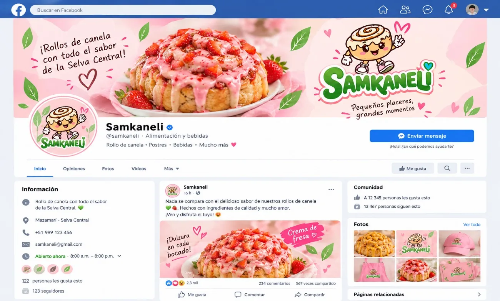
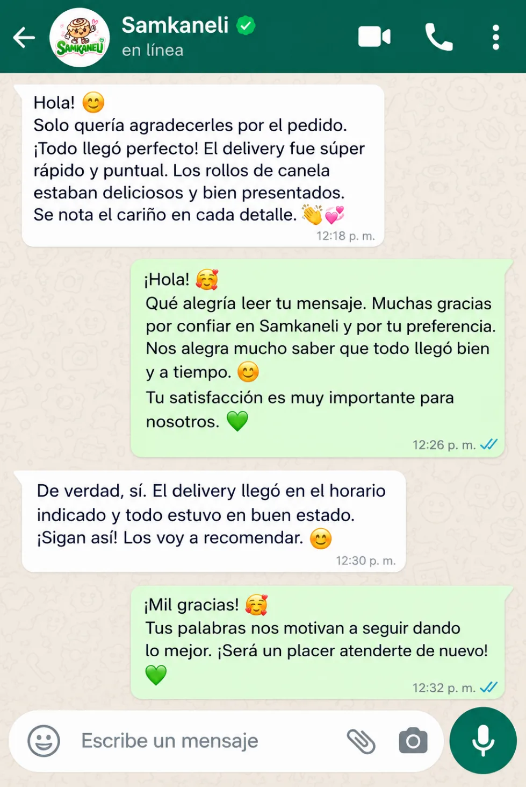

✓ Cómo suena
Cálido, natural, con un emoji moderado.
Inicio › Comunicación
Identidad verbal
SAMKANELI quiere sonar amigable, acogedora, responsable y confiable. Aquí se ve cómo se traduce eso en mensajes reales. Todos los ejemplos son propuestas, no mensajes ya usados.

Personalidad verbal
Redactadas en lenguaje cotidiano.
Somos dulces y cercanos.
Hablamos con amabilidad.
Nos gusta compartir sabores diferentes.
Comunicamos con claridad y responsabilidad.
Queremos que cada persona se sienta bienvenida.
Tono de voz
Cada principio, con su ejemplo y su canal.
Conversar como alguien que recomienda algo rico.
Cálido, natural, con un emoji moderado.
Seco, distante o demasiado formal.
«¡Hola! 💕 Bienvenido a SAMKANELI. ¿Qué rollito te gustaría descubrir hoy?»
PropuestaWhatsApp y comentarios.
Hacer que el cliente se sienta bienvenido.
Cercano, paciente, con saludo y nombre.
Apurado, impersonal.
«Gracias por escribirnos, cuéntanos qué te gustaría probar.»
PropuestaAtención en mostrador y chat.
Explicar sabores y condiciones sin complicaciones.
Frases cortas y claras.
Con palabras técnicas o párrafos largos.
«Rollo de canela con un toque frutal. Cuéntanos tu sabor favorito.»
PropuestaMenú, catálogo y etiquetas.
Dar información clara y no prometer lo que no se puede garantizar.
Honesto, concreto, con datos confirmados.
Prometer tiempos o resultados sin confirmarlos.
«Déjanos revisar la disponibilidad y te confirmamos.»
PropuestaPedidos y reclamos.
Transmitir entusiasmo por los productos y las combinaciones.
Divertido, con ideas y buen humor.
Exagerado, con mayúsculas y signos de más.
«Un rollito con un toque frutal para darle un giro a tu momento dulce.»
PropuestaRedes sociales y videos cortos.
Mensajes reales
Conversaciones de ejemplo para los momentos más comunes.
SAMKANELI SAMKANELI SAMKANELI SAMKANELI SAMKANELI SAMKANELIPropuesta Frases propuestas. No se afirma que se usen actualmente ni que prometan disponibilidad, tiempos o resultados.
Comparación
La del medio y la de la derecha son ejemplos de lo que conviene evitar.
SAMKANELI SAMKANELI SAMKANELIExplorador
La primera es el eslogan oficial; las otras son líneas creativas propuestas.
«Un rollito, un momento dulce. Cuéntanos qué sabor te gustaría probar.»
«¿Maracuyá o mango? Cuéntanos cuál te antoja más.»
«¡Llegó un nuevo sabor inspirado en nuestra selva!»
Propuesta
Presencia digital
Propuestas visuales que adaptan la identidad a cada formato.




Avatar, portada de destacados, publicaciones de producto e historias.
PROPUESTA / POR DEFINIR
@samkaneli (propuesta)
Portada, presentación de la marca y álbum de sabores.
PROPUESTA / POR DEFINIR
Nombre por definir
Videos verticales cortos de elaboración y sabores.
PROPUESTA / POR DEFINIR
Usuario por definir
Mensaje de bienvenida, catálogo y respuestas rápidas.
PROPUESTA / POR DEFINIR
Número pendiente
Firma con logotipo y plantilla de respuesta.
PROPUESTA / POR DEFINIR
Dirección pendiente
No existen perfiles oficiales mostrados aquí. Las cifras y datos de los mockups son ilustrativos.